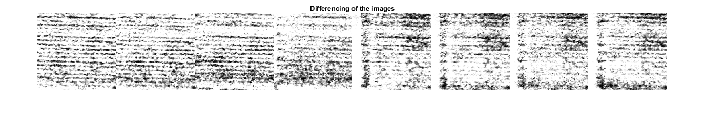

Contents
- Getting images
- Enhancing the contrast
- Selection of a base line for intensity profile
- Evaluating peaks and valley of the intesity profile at base line
- Differencing the two images to segment the shadow for depth analysis
- Thresholding for consistent shadows
- Selection of base line for intesity profile imshow(bw1);
- Intensity Profile at the base line
- Depth map from the length of shadows obtained from the intensity profile
- conclusion
Getting images
img0 = imread('Im0.jpg'); imgray0=rgb2gray(imcrop(img0,[1387.5 825.5 429 423])); for i=1:8 S = dir(fullfile('*.jpg')); img{i} = imread(S(i+1).name); imgray{i}=rgb2gray(imcrop(img{i},[1387.5 825.5 429 423])); end figure montage({img{1},img{2},img{3},img{4},img{5},img{6},img{7},img{8}},'Size',[1,8]); title('Sample Images') figure montage({imgray{1},imgray{2},imgray{3},imgray{4},imgray{5},imgray{6},imgray{7},imgray{8}},'Size',[1,8]); title('Cropped')
Enhancing the contrast
#0 flash0
J0 = histeq(imgray0); % Histogram Equilization B0 = locallapfilt(J0,0.4,0.5); % Second Derivative % #1 for i=1:8 JJ{i} = histeq(imgray{i}); % Histogram Equilization BB{i} = locallapfilt(JJ{i},0.4,0.5); % Second Derivative end figure montage({BB{1},BB{2},BB{3},BB{4},BB{5},BB{6},BB{7},BB{8}},'Size',[1,8]); title('Contrast Enhanced')
Selection of a base line for intensity profile
for i=1:8
subplot(1,8,i)
imshow(JJ{i});
hold on;
p1 = [110 110]; % Start point of base line
p2 = [10 360]; % End point of base line
plot(p1,p2,'Color','r','LineWidth',2);
hold off;
subplot(1,8,i)
plot(improfile(BB{i},p1,p2)); % intesity profile of at the base line
hold on;
Evaluating peaks and valley of the intesity profile at base line
[fx,fy,f]=improfile(B{i},p1,p2);% Intensity info at the base line
for x=2:350
if f(x)>f(x+1) && f(x)>f(x-1) % Local Maximas
plot(fx(x+1),f(x),'*r');
end
if f(x)<f(x+1) && f(x)<f(x-1) % Local Minimas
plot(fx(x+1),f(x),'*g');
end
end
hold off;
end
Differencing the two images to segment the shadow for depth analysis
for i=1:8
imgdif{i} = abs(BB{i}-B0); % differenceing the images from Flash1 and Flash2
L{i}=imcomplement(imgdif{i});
%Lgray{i}=rgb2gray(L{i});
Thresholding for consistent shadows
bw{i}=imbinarize(L{i},0.7);
subplot(1,8,i)
imshow(bw{i})
hold on;
Selection of base line for intesity profile imshow(bw1);
%title('Base line on Thresholded Image') p3=[110 110]; % Start point of base line p4=[10 360]; % End point of base line plot(p3,p4,'Color','r','LineWidth',2); hold off; [cx,cy,c]=improfile(bw{i},p3,p4);


Intensity Profile at the base line
profile=improfile(bw{i},p3,p4);
subplot(1,8,i)
plot(profile);
%title('Intensity profile with highlited shadow location overt the base line')
xlabel('L')
ylabel('intensity')
hold on;

Depth map from the length of shadows obtained from the intensity profile
for k=1:350 % Find for the shadow region if c(k)==0 plot(cx(k+1),c(k),'*r','LineWidth',3); end end len={};s=1; % Array to store the lengths of the shadows at the base line for l=1:length(cx)-1 if c(l)==1 if c(l+1)==0 l1=cx(l+1); end end if c(l)==0 if c(l+1)==1 len{s}=cx(l)-l1; s=s+1; end end end hold off;
end
conclusion
figure
montage({L{1},L{2},L{3},L{4},L{5},L{6},L{7},L{8}},'Size',[1,8]); %Differencing of the images
title('Differencing of the images')
figure
montage({bw{1},bw{2},bw{3},bw{4},bw{5},bw{6},bw{7},bw{8}},'Size',[1,8]);
title('Thresholded Image')
montage({img{1},img{2},img{3},img{4},img{5},img{6},img{7},img{8},imgray{1},imgray{2},imgray{3},imgray{4},imgray{5},imgray{6},imgray{7},imgray{8},BB{1},BB{2},BB{3},BB{4},BB{5},BB{6},BB{7},BB{8},L{1},L{2},L{3},L{4},L{5},L{6},L{7},L{8},bw{1},bw{2},bw{3},bw{4},bw{5},bw{6},bw{7},bw{8}}, 'Size', [5,8]);
